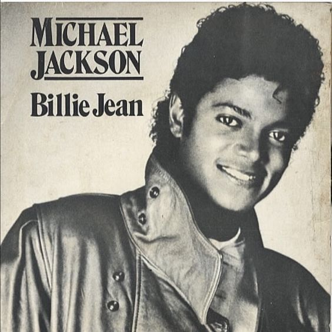

Top 5 Mejores Canciones Pop de la Historia
"Billie Jean" - Michael Jackson

Fecha de Publicación: 1983
Artista: Michael Jackson
Reseña: Este clásico de Michael Jackson, lanzado en 1983 como parte de su álbum "Thriller", es una de las canciones más icónicas de todos los tiempos. Su ritmo pegajoso y su inconfundible bajo lo convierten en un tema que ha perdurado en el tiempo.